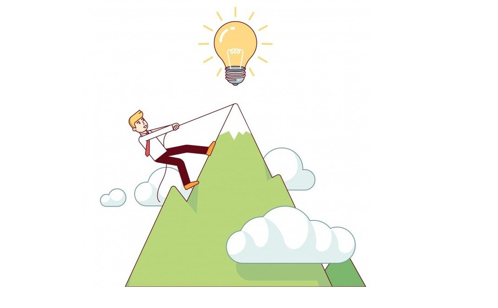

Si të Arrini Suksesin
Motivimi si Hapi i Parë
Motivimi është një nga faktorët kyç që na ndihmon të arrijmë suksesin. Pa motivim, është e vështirë të angazhohemi në një punë të vazhdueshme dhe të arrijmë qëllimet tona. Ky është hapi i parë për të bërë çdo ëndërr të mundur.
Shpesh, motivimi fillon me një ide ose një pasion që na shtyn të ndjekim një rrugë të caktuar. Ky ndjenjë është e ndryshme për çdo individ dhe mund të lindë nga:
- Deshira për të arritur diçka të madhe në jetë
- Përkushtimi ndaj një pasioni ose interesi
- Dëshira për të ndihmuar të tjerët
Strategjitë për Të Arritur Suksesin
Njëherë kur motivimi është i pranishëm, është e rëndësishme të keni një plan të qartë dhe strategji për ta arritur suksesin. Disa strategji të përdorura shpesh janë:
- Vendosja e Qëllimeve të Qarta: Qëllimet e qarta janë udhëzues që të mbajnë në rrugën e duhur.
- Përsëritja dhe Puna e Palodhur: Suksesi nuk vjen lehtësisht, dhe duhet të punoni vazhdimisht për të arritur atë që dëshironi.
- Organizimi i Kohës: Menaxhimi i kohës është një faktor i rëndësishëm që ndihmon në arritjen e suksesit në afat të shkurtër dhe afatgjatë.
Çdo hap që merrni duhet të jetë një hap që ju sjell më afër qëllimeve tuaja. Është gjithashtu e rëndësishme të jeni të durueshëm, sepse suksesin shpesh e arrini pas shumë përpjekjesh.
Qëndrimi Pozitiv dhe Përshtatshmëria
Të kesh një qëndrim pozitiv është shumë e rëndësishme për të kaluar përmes pengesave dhe sfidave që mund të dalin gjatë rrugës suaj. Një qëndrim pozitiv do t'ju ndihmojë të shihni mundësitë edhe në momentet e vështira dhe të mos dorëzoheni kur gjërat bëhen të vështira.
Një tjetër element i rëndësishëm është përshtatshmëria. Ndryshimet janë të pashmangshme dhe aftësia për t'u përshtatur me situata të reja është thelbësore për të arritur qëllimet tuaja.
Përfundim
Arritja e suksesit është një proces që kërkon kohë, angazhim dhe durim. Motivimi i brendshëm, strategjitë e duhura, dhe qëndrimi pozitiv janë disa nga faktorët që mund të ndihmojnë një individ të arrijë suksesin. Ndaj, filloni tani dhe bëni çdo ditë një hap më afër ëndrrës tuaj.